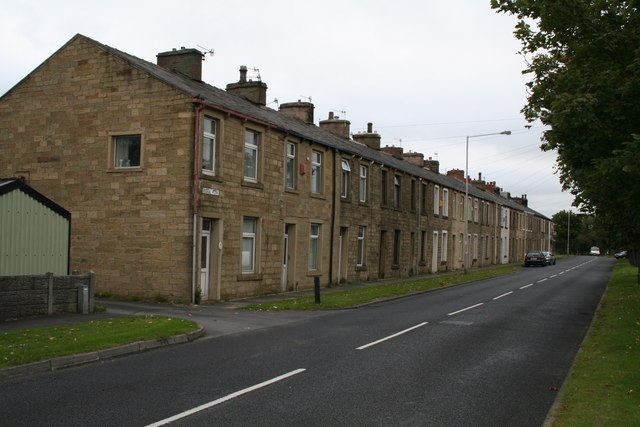

PP434 data project · 2026/27
England’s council tax is stuck in 1991
England’s council tax still rests on what homes were worth in April 1991. Using 1.8m recent sales, this project compares what homes in 6,856 small areas pay with what they are worth today, and makes the case for revaluation.

Aims
England’s council tax bands are fixed by law at 1 April 1991 values and have never been revalued [Local Government Finance Act 1992; IFS 2020]. Since then, prices in London have risen faster than in any other English region, especially compared to the the North East. Thus, bills have drifted from what homes are worth. In this project, I investigate and visualise whether a property’s bill still rises with its value, for each of 6,856 small areas in 2026-27; earlier studies have found it does not [IFS 2020; Resolution Foundation 2018; IPPR 2018]. Further, I then test four claims made this year: HM Treasury’s, that its 2028 surcharge on £2m homes targets the largest inequalities [HM Treasury 2026]; the Department for Energy Security and Net Zero’s, that its £100 payment to Bands A–D reaches 83% of fuel-stressed households [DESNZ 2026]; Mortgage Introducer’s July ranking, which puts Burnley’s rate at 16 times Westminster’s [Mortgage Introducer 2026]; and the Fairer Share campaign’s estimate that under a flat 0.48% tax, 77% of households would pay less [Fairer Share 2026].
Figure 1
In the cheapest areas, council tax stands at 1.49% of home value a year. In the most expensive, it is just 0.25%.
Bill as % of home value, 6,856 small areas, 2026-27; log scales
Each point represents one of 6,856 small areas. The line runs along the median. Thus, the more expensive the area, the smaller the share of the value that property owners must pay.
In Burnley, the property tax for an average home valued at £157,600 is £1,955 per year, which is 1.24% of its value. In Westminster, the average home is valued at £974,600 and pays £1,399 per year: 0.14%, or less than one-eighth of the rate in Burnley.
A flat rate of 0.64% of the current value would yield the same total as today. The 0.48% rate proposed by “Fairer Share” would raise three-quarters of that amount.
Figure 2
Since 1995, London prices have surged sevenfold, the North East’s fourfold.
Average house price by region, as a multiple of January 1995
Figure 3
[Headline]
Bill as % of home value, by council, 2026-27
Your location stays in your browser: it is not stored or sent anywhere.
Figure 4
[Headline]
Band H bill as % of value, with the 2028 surcharge
Bill as a share of value
Sales at £2 million or more since January 2024
Figure 5
[Headline]
Homes in Bands A–D against fuel poverty, by council
Figure 6
[Headline]
Homes in areas that would pay less under a flat tax
Data
[Data, up to 200 words: sources, how they are accessed, how the page updates itself]
Sources, licences and downloads
| Source | Publisher | Used for | Licence |
|---|---|---|---|
| Council Tax: stock of properties (CTSOP1.1, CTSOP3.1) | Valuation Office, HMRC | Homes by band and type, every small area | OGL v3.0 |
| Council Tax levels set by local authorities (Table 9) | MHCLG | Area Band D by council | OGL v3.0 |
| Price Paid Data | HM Land Registry | Sale prices since January 2024 | OGL v3.0 |
| UK House Price Index | HM Land Registry, ONS | Bringing sales to one month; regional prices | OGL v3.0 |
| Postcode to OA, LSOA, MSOA and LAD lookup | ONS | Placing sales in small areas | OGL v3.0; OS and Royal Mail rights |
| Sub-regional fuel poverty | DESNZ | Fuel poverty by council and small area | OGL v3.0 |
| Hexmaps: local authority districts 2025 | Open Innovations | Hexagon map layout | MIT |
| Local authority district boundaries (December 2024), generalised | ONS, via Open Innovations | Real map in figure 3 | OGL v3.0; OS rights |
Built files: msoa.csv · councils.csv · regions.csv · summary.json · hex-lad-2025.geojson · lad-2025-map.geojson
git clone https://github.com/jakobbilan/jakobbilan.github.io
cd jakobbilan.github.io
pip install -r requirements.txt
python -m pipeline.buildTools
[Tools, up to 200 words: cleaning and matching, the method correction, challenges and how they were solved]
Conclusions
[Conclusions, up to 200 words: what the evidence shows about each claim, and what it does not]